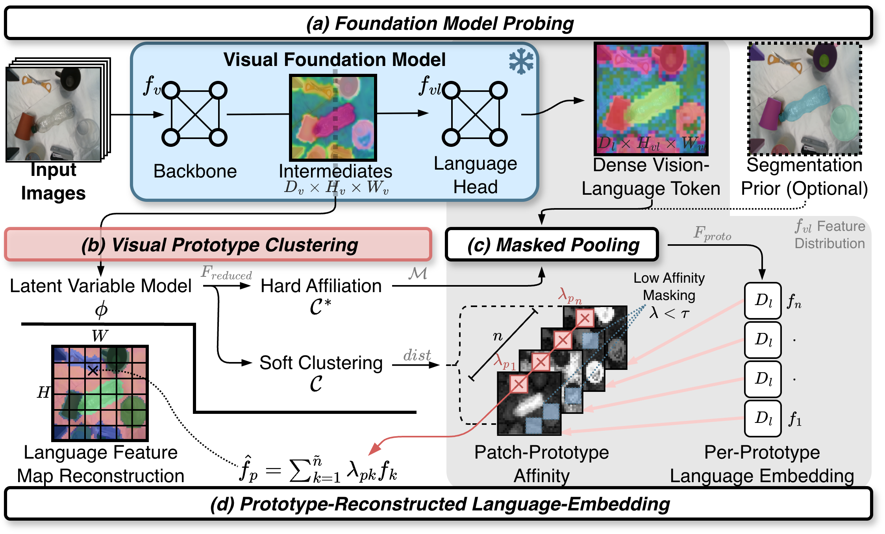
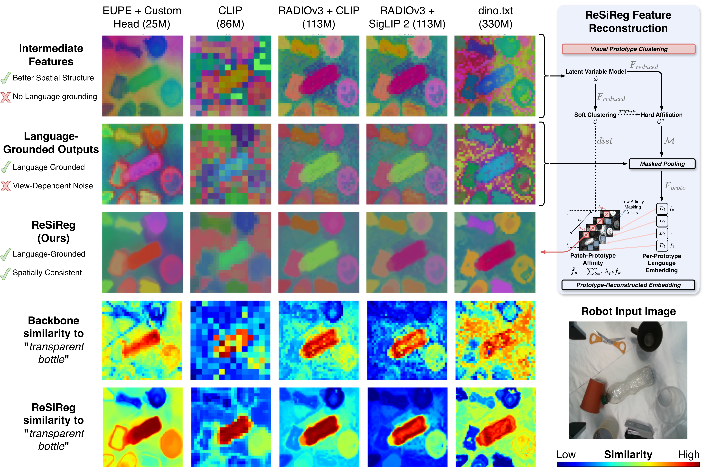

Applies post hoc to recent VLM families using spatial structure already present in their intermediate features.
Abstract
Vision-Language Models (VLMs) enable robots to follow open-language instructions. However, dense VLM embeddings have shown to be noisy and lack spatial consistency. This is problematic for robotic applications, which require simultaneous reasoning over semantics and 3D space. We examine spatial structure across recent VLMs and propose ReSiReg, a feature reconstruction method that uses spatially consistent VLM intermediates to improve dense language-grounded retrieval. ReSiReg clusters intermediates into visual prototypes, derives their language descriptors, and reconstructs each patch as a soft mixture of prototype-level language embeddings. We evaluate quantitatively on open-vocabulary semantic segmentation and 3D mapping across backbones, and qualitatively in real-world manipulation scenes. Quantitative results show improved dense retrieval; manipulation scenes show more spatially consistent target activations. We further provide a compact 25M dense VLM for robotic applications, substantially smaller than and competitive with ViT-B baselines.
Reconstructs dense output features from visual prototypes without increasing the underlying model size.
Supports online 2D retrieval and 3D aggregation, with ReSiReg Lite exceeding 30 FPS in batched Jetson inference.
Method
From visual prototypes to language embeddings
ReSiReg transfers spatial structure from model intermediates into the model’s language-grounded feature space.

- Probe one VLMExtract spatially consistent intermediate tokens and language-aligned output tokens from the same frozen model.
- Discover prototypesReduce and cluster intermediate tokens into hard assignments and soft patch-to-prototype affinities.
- Ground in languagePool output tokens over each visual prototype, optionally using a segmentation prior.
- Reconstruct softlyRepresent each patch as a mixture of prototype-level language embeddings for smooth, coherent retrieval.
Results
Consistent gains across backbones and tasks
Evaluated on 2D open-vocabulary segmentation, 3D semantic mapping, and real-world manipulation scenes.
ReSiReg Full average gain across evaluated backbones for outdoor open-vocabulary semantic segmentation.
The largest reported ORAD-3D gain, improving a RADIOv4 + SigLIP 2 dense backbone from 19.11 to 28.89 mIoU.
A compact dense VLM built for robotic deployment, substantially smaller than ViT-B alternatives.
ReSiReg Lite and the compact backbone surpass real-time throughput on NVIDIA Jetson Orin.
Qualitative Manipulation Results

Interactive playground
Try ReSiReg in your browser
Explore common robotics tasks with ReSiReg Mini. The demo is hosted on Hugging Face Spaces.
Citation
Cite ReSiReg
If ReSiReg supports your research, please cite the arXiv preprint.
@misc{schwaiger2026resireg,
title = {ReSiReg: Towards Spatially Consistent Semantics in
Language-Conditioned Robotic Tasks},
author = {Schwaiger, Simon and Seyser, David and Scherl, Alessandro
and W{\"o}ber, Wilfried and Steinbauer-Wagner, Gerald},
year = {2026},
eprint = {2606.19088},
archivePrefix = {arXiv},
primaryClass = {cs.RO},
url = {https://arxiv.org/abs/2606.19088}
}